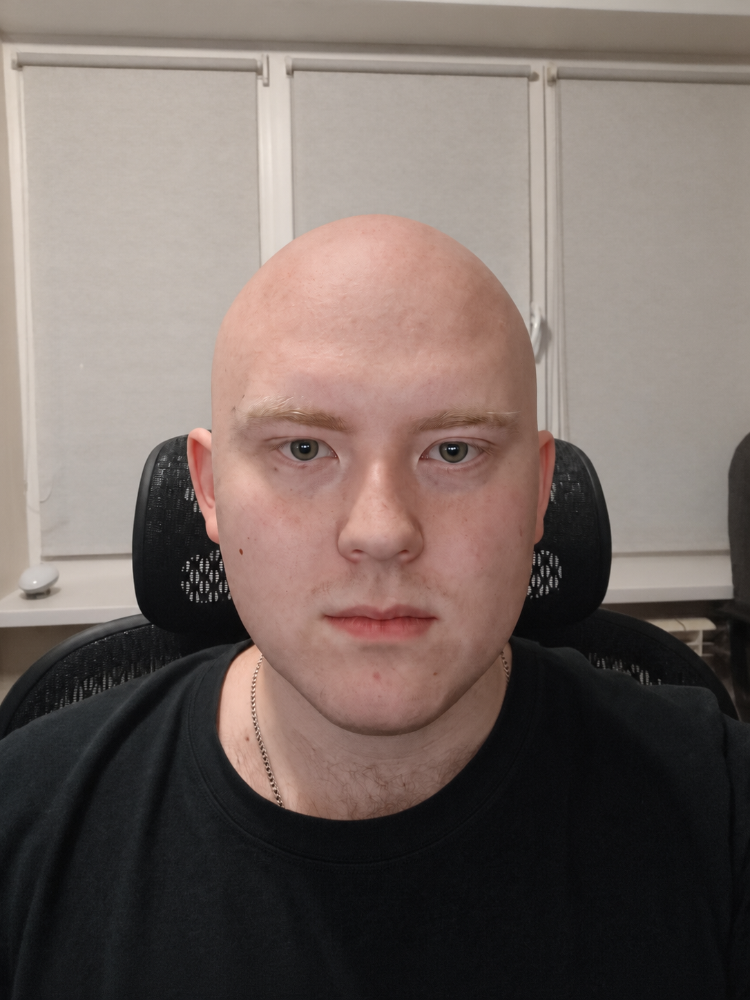

Ivanov Vladislav CV
Contacts
email: iwanow.wld@gmail.com
discord: Vladislav Ivanov (@IvanovVlad)

Summary
I am an active Full Stack Developer, currently working on the development of applications using Java/Spring for the backend and Vue.js for the frontend. My goal in taking this course is to sharpen my technical skills and broaden my knowledge of current development practices.
Code example
- I participated in short course in university repository with source code
Skills
Programming languages:
- Java/Spring
- Postgresql
- TS/Vue Js
Others:
- OOP, SOLID
- SEO optimisation
- Claude Code, agentic development
- Computer science
Experience
- Codecademy HTML & CSS projects
- RSSchool. Finished RS 2019 Q3
- Food delivery website for Tomsk company
- Fullstack dev in ООО Ирбис Аналитика
Education
- ISTU Specialist "Applied Informatics"
- ISTU Bachelor "Programm Ingeneering" In progress
- RSSchool. Finished RS 2019 Q3
English
- English B2
- Communication with English native speakers (ISTU foreign students)